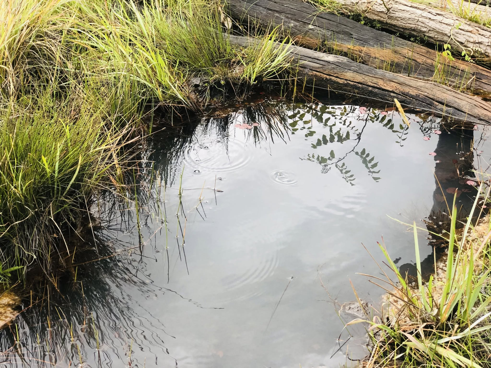
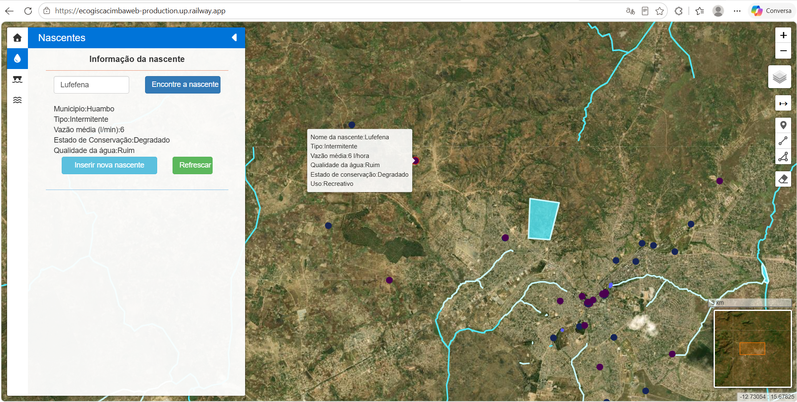

Know where water is, in what condition, and what it is used for. Saiba onde está a água, em que estado se encontra e para que é usada.
Cacimba is a web-based geographic information system that brings springs, rivers and lakes together in one interactive map, so that institutions, communities and researchers can inventory water sources, monitor how well they are protected and how clean their water is, and manage them better. O Cacimba é um sistema de informação geográfica na web que reúne nascentes, rios e lagos num único mapa interativo, para que instituições, comunidades e investigadores possam inventariar as fontes de água, monitorizar o seu nível de proteção e a limpeza da água, e geri-las melhor.
PurposePropósito
One shared map for water informationUm mapa partilhado para a informação sobre a água
Information about water sources is often spread across paper records, spreadsheets and local knowledge, which makes it hard to see the full picture or to keep it up to date. Cacimba puts it in one place: a map that anyone with a web browser can use, with no GIS software to install.
A informação sobre as fontes de água está muitas vezes dispersa por registos em papel, folhas de cálculo e conhecimento local, o que dificulta ter uma visão completa ou mantê-la actualizada. O Cacimba reúne-a num só lugar: um mapa que qualquer pessoa pode usar num navegador, sem instalar software de SIG.
Cacimba is also a tool to track how water sources are being protected and how clean the water is that communities rely on. Each record notes the type, state (degraded or preserved), use and water quality of a source, so degradation and contamination can be spotted and followed over time.
O Cacimba é também uma ferramenta para acompanhar como as fontes de água estão a ser protegidas e quão limpa é a água de que as comunidades dependem. Cada registo indica o tipo, o estado (degradada ou preservada), o uso e a qualidade da água da fonte, para que a degradação e a contaminação possam ser detetadas e seguidas ao longo do tempo.
Why field data matters: springs are small and often sit beneath trees, so satellite images cannot capture them reliably. Cacimba lets people on the ground map them, with their exact location and condition, in a single database that all users share.
Porque os dados de campo importam: as nascentes são pequenas e ficam muitas vezes debaixo de árvores, pelo que as imagens de satélite não as captam de forma fiável. O Cacimba permite que as pessoas no terreno as cartografem, com a localização exata e o estado, numa única base de dados partilhada por todos os utilizadores.

See it in actionVeja em ação
The Cacimba WebGISO WebGIS Cacimba
Springs, rivers and lakes on a single interactive map, ready to explore from any browser.
Nascentes, rios e lagos num único mapa interativo, prontos a explorar a partir de qualquer navegador.


Field dataDados de campo
Collected on site, stored with the water sourceRecolhidos no local, guardados com a fonte de água
Knowing that a water source exists is not enough: communities need to know what kind of source it is, whether it is degraded or preserved, what it is used for, and whether its water is safe. Technicians collect this information at springs, rivers and lakes and enter it in Cacimba, where it becomes part of that source’s record.
Saber que uma fonte de água existe não basta: as comunidades precisam de saber de que tipo de fonte se trata, se está degradada ou preservada, para que é usada e se a água é segura. Os técnicos recolhem esta informação em nascentes, rios e lagos e introduzem-na no Cacimba, onde passa a fazer parte do registo dessa fonte.
- 1Collect the type, state (degraded or preserved) and use, and measure the water quality, at the spring, river or lake during the field visit.Recolher o tipo, o estado (degradada ou preservada) e o uso, e medir a qualidade da água, na nascente, rio ou lago durante a visita de campo.
- 2Save everything as attributes of that specific spring, river or lake in the shared database.Guardar tudo como atributos dessa nascente, rio ou lago específico na base de dados partilhada.
- 3See the results in the platform: select the spring, river or lake on the map and its type, state, use and water quality are displayed.Ver os resultados na plataforma: selecione a nascente, rio ou lago no mapa e o tipo, o estado, o uso e a qualidade da água são apresentados.
Key featuresFuncionalidades principais
What you can do with CacimbaO que pode fazer com o Cacimba
Interactive mapMapa interativo
Pan and zoom across the region, switch layers on and off, and use the overview map, scale bar and live coordinates to find your way.
Navegue e amplie a região, ligue e desligue camadas e use o mapa de apoio, a escala e as coordenadas para se orientar.
Springs, rivers and lakesNascentes, rios e lagos
Three layers: springs as points, rivers as lines and lakes as areas. Springs are colour-coded by state, degraded or preserved.
Três camadas: nascentes como pontos, rios como linhas e lagos como áreas. As nascentes são coloridas conforme o estado, degradada ou preservada.
Detailed attributesAtributos detalhados
Select a feature to see its type, state (degraded or preserved), use and water quality, all collected in the field and stored as attributes of that spring, river or lake.
Selecione um elemento para ver o tipo, o estado (degradada ou preservada), o uso e a qualidade da água, recolhidos no terreno e guardados como atributos dessa nascente, rio ou lago.
Search by namePesquisa por nome
Find a spring, river or lake directly by name and jump straight to it on the map.
Encontre uma nascente, rio ou lago diretamente pelo nome e vá imediatamente até ele no mapa.
Add data on the mapRegisto de dados no mapa
Draw a point, line or area, fill in a short form and save. The platform rejects duplicate names to keep records clean.
Desenhe um ponto, linha ou área, preencha um formulário curto e guarde. A plataforma recusa nomes repetidos para manter os registos organizados.
Central spatial databaseBase de dados espacial central
Data is stored in a PostgreSQL/PostGIS spatial database in the cloud, so every user sees the same, up-to-date information.
Os dados ficam numa base de dados espacial PostgreSQL/PostGIS na nuvem, por isso todos os utilizadores veem a mesma informação atualizada.
How it worksComo funciona
From open map to updated record in three stepsDo mapa aberto ao registo atualizado em três passos
ExploreExplorar
Open the WebGIS in any browser and browse the springs, rivers and lakes layers.
Abra o WebGIS em qualquer navegador e percorra as camadas de nascentes, rios e lagos.
Inspect and searchConsultar e pesquisar
Select any feature to read its attributes, or search for it by name.
Selecione qualquer elemento para ler os seus atributos, ou pesquise-o pelo nome.
ContributeContribuir
Add a new spring, river or lake directly on the map, together with its type, state, use and water quality, and it joins the shared database.
Adicione uma nova nascente, rio ou lago diretamente no mapa, juntamente com o tipo, o estado, o uso e a qualidade da água, e passa a fazer parte da base de dados partilhada.
Practical applicationsAplicações práticas
Where Cacimba helpsOnde o Cacimba ajuda
Water-source inventoryInventário de fontes de água
Municipality administration, NGOs and community organisations can keep a single, mapped register of the water sources in their area.
Administrações municipais, ONGs e organizações comunitárias podem manter um registo único e cartografado das fontes de água da sua área.
Conservation monitoringMonitorização da conservação
Record whether sources are preserved or degraded, what they are used for and how clean their water is, and see at a glance where protection is most needed. Ground-level records capture small springs that satellite images miss.
Registe se as fontes estão preservadas ou degradadas, para que são usadas e quão limpa é a sua água, e veja de relance onde a proteção é mais necessária. Os registos de campo captam nascentes pequenas que as imagens de satélite não detetam.
Water access planningPlaneamento do acesso à água
Understand which sources are used for what, and use the measured water quality of each spring, river and lake to see where it is a concern and support planning decisions.
Perceba que fontes servem que usos e use a qualidade da água medida em cada nascente, rio e lago para ver onde é uma preocupação e apoiar decisões de planeamento.
Research and educationInvestigação e educação
Support field surveys, environmental studies and student projects with a ready-to-use, shared spatial dataset.
Apoiar levantamentos de campo, estudos ambientais e trabalhos de estudantes com um conjunto de dados espaciais partilhado e pronto a usar.
Try Cacimba nowExperimente o Cacimba
The WebGIS is online and ready to explore. No installation or account needed to browse the map.
O WebGIS está online e pronto a explorar. Não é necessária instalação nem conta para consultar o mapa.
Open the WebGISAbrir o WebGIS